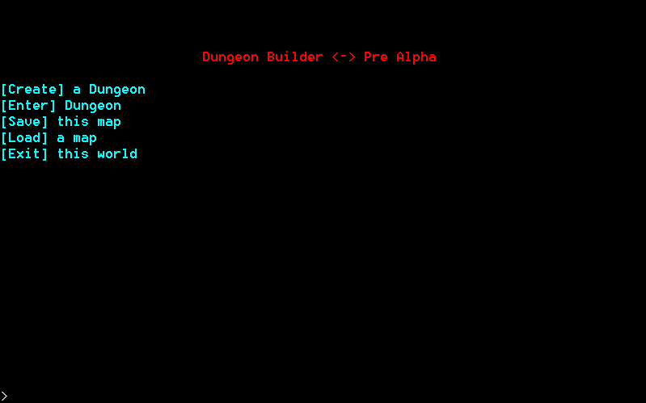
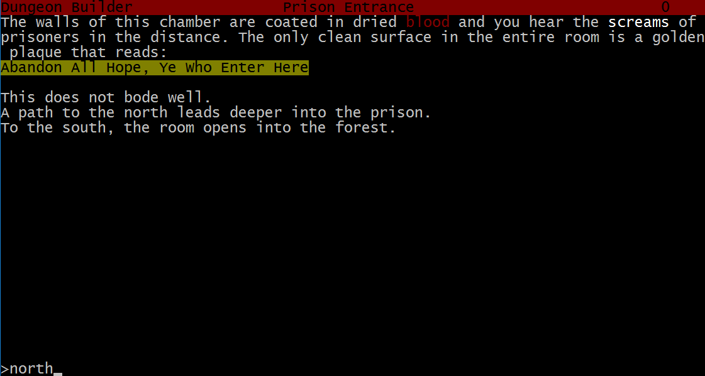
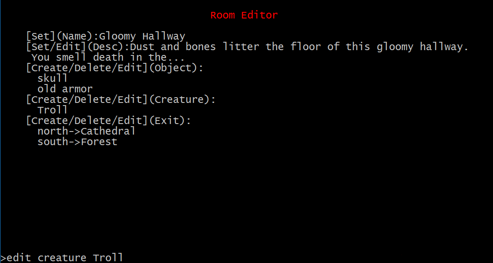

Dungeon Builder
First Person Text Based Game Engine

A project to create a cross platform, console text game engine in the spirit of the old Infocom games.
The minimum feature set for this game is to create a flexible enough engine
that one can recreate the game Zork1 from within it. You will be able to create your own world, place objects
and NPCs within it, save the world to a JSON format, and play it. The save format will be user readable and editable
so that you can, if desired, edit it with your own text editing tools.
The project is being coded in C++ and uses the NCurses library (PDCurses for Windows) with an aim to keep it comptabile
on as many platforms as possible. Currently it compiles and runs in both Windows and Linux.

Enhanced features above and beyond the Zork1 feature set will include:
- 16 Colors instead of 2
- Dual,Triple,Monitor Support
- Saving gameplay transcripts
- Support for N-dimensional worlds
- And more!

Authors and Contributors
@jackmott and @bytewalls are the current primary contributors.
Support or Contact
Please contact jack.mott@thatgoogleemailthing if you are interested in contributing.